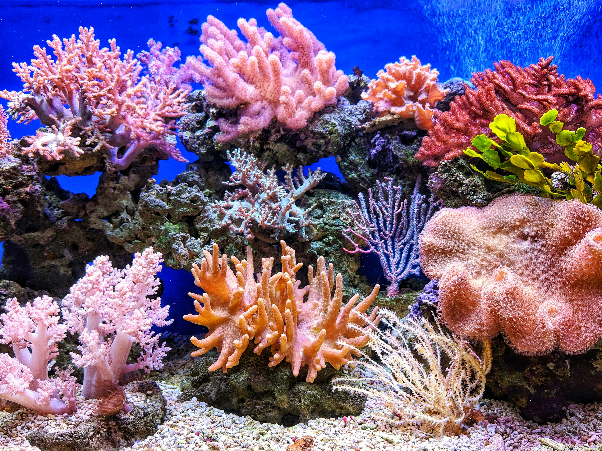

Rosliny i uklad zbiornika
Porada:
Wysokie rosliny daj z tylu, a niskie z przodu. Akwarium bedzie wygladalo naturalniej.
Rosliny poprawiaja wyglad akwarium i pomagaja ograniczac glony, bo konkuruja o skladniki odzywcze.
Do prostego akwarium pasuja anubiasy, mchy, kryptokoryny i nurzance. Nie wymagaja trudnej pielegnacji.

Plan sadzenia
- Najpierw umyj żwir albo piasek.
- Posadź rośliny przed wlaniem całej wody.
- Nie zakopuj kłącza anubiasa.
- Po starcie świeć krócej, około 6 godzin dziennie.
- Po posadzeniu delikatnie uzupełnij wodę, aby nie wypłukać podłoża.
- Regularnie obserwuj wzrost roślin i w razie potrzeby stosuj odpowiednie nawozy.